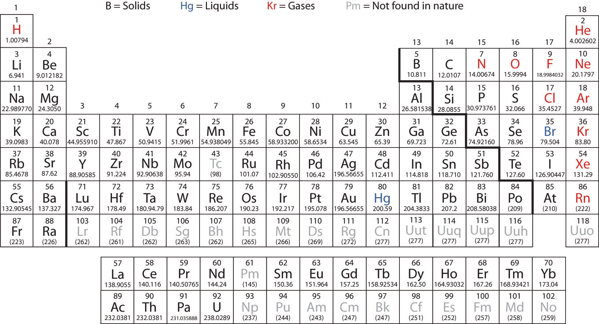
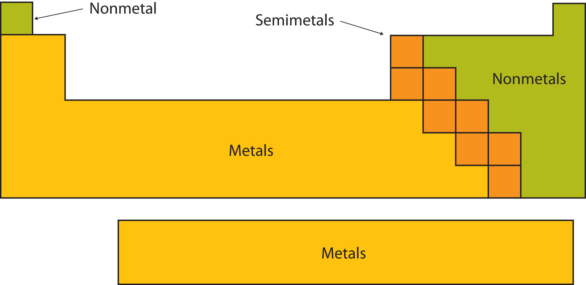
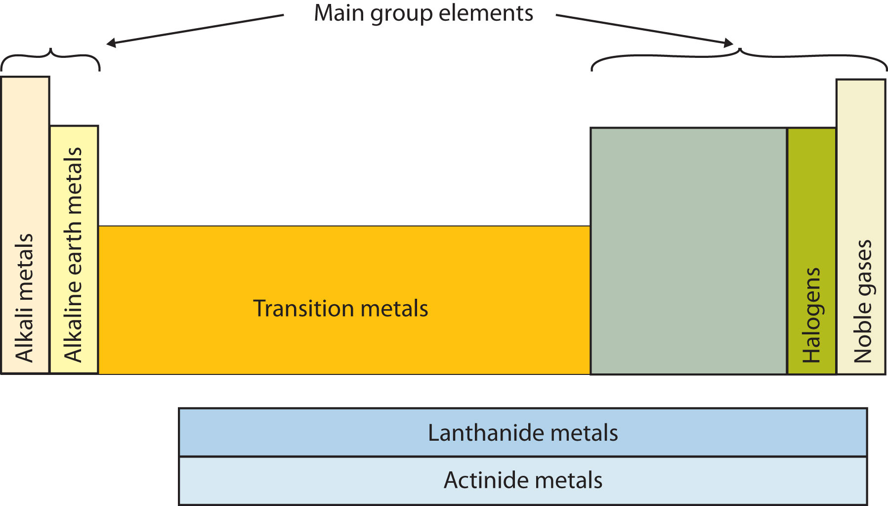
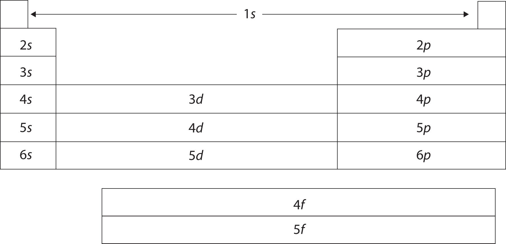
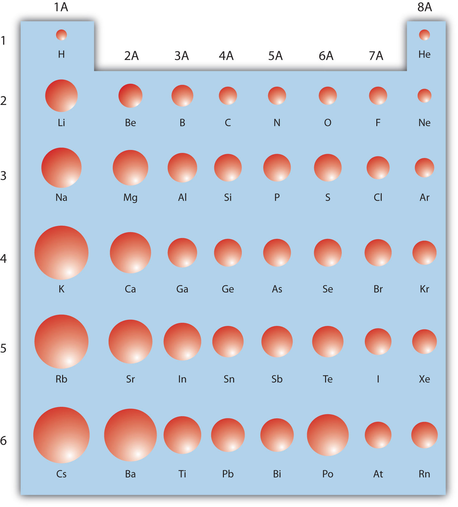

The hardest material in the human body is tooth enamel. It has to be hard so that our teeth can serve us for a lifetime of biting and chewing; however, tough as it is, tooth enamel is susceptible to chemical attack. Acids found in some foods or made by bacteria that feed on food residues on our teeth are capable of dissolving enamel. Unprotected by enamel, a tooth will start to decay, thus developing cavities and other dental problems.
In the early 1900s, a dentist in Colorado Springs, Colorado, noted that many people who lived in the area had brown-stained teeth that, while unsightly, were surprisingly resistant to decay. After years of study, excess fluorine compounds in the drinking water were discovered to be the cause of both these effects. Research continued, and in the 1930s, the US Public Health Service found that low levels of fluorine in water would provide the benefit of resisting decay without discoloring teeth.
The protective effects of fluorine have a simple chemical explanation. Tooth enamel consists mostly of a mineral called hydroxyapatite, which is composed of calcium, phosphorus, oxygen, and hydrogen. We know now that fluorine combines with hydroxyapatite to make fluorapatite, which is more resistant to acidic decay than hydroxyapatite is. Currently about 50% of the US population drinks water that has some fluorine added (in the form of sodium fluoride, NaF) to reduce tooth decay. This intentional fluoridation, coupled with the use of fluoride-containing toothpastes and improved oral hygiene, has reduced tooth decay by as much as 60% in children. The nationwide reduction of tooth decay has been cited as an important public health advance in history. (Another important advance was the eradication of polio.)
Just as a language has an alphabet from which words are built, chemistry has an alphabet from which matter is described. However, the chemical alphabet is larger than the one we use for spelling. You may have already figured out that the chemical alphabet consists of the chemical elements. Their role is central to chemistry, for they combine to form the millions and millions of known compounds.
An element, as defined in Chapter 1 "Chemistry, Matter, and Measurement", is a substance that cannot be broken down into simpler chemical substances. There are about 90 naturally occurring elements known on Earth. Using technology, scientists have been able to create nearly 30 additional elements that do not occur in nature. Today, chemistry recognizes 118 elements—some of which were created an atom at a time. Figure 2.1 "Samples of Elements" shows some of the chemical elements.
The elements vary widely in abundance. In the universe as a whole, the most common element is hydrogen (about 90% of atoms), followed by helium (most of the remaining 10%). All other elements are present in relatively minuscule amounts, as far as we can detect.
On the planet Earth, however, the situation is rather different. Oxygen makes up 46.1% of the mass of Earth’s crust (the relatively thin layer of rock forming Earth’s surface), mostly in combination with other elements, while silicon makes up 28.5%. Hydrogen, the most abundant element in the universe, makes up only 0.14% of Earth’s crust. Table 2.1 "Elemental Composition of Earth" lists the relative abundances of elements on Earth as a whole and in Earth’s crust. Table 2.2 "Elemental Composition of a Human Body" lists the relative abundances of elements in the human body. If you compare Table 2.1 "Elemental Composition of Earth" and Table 2.2 "Elemental Composition of a Human Body", you will find disparities between the percentage of each element in the human body and on Earth. Oxygen has the highest percentage in both cases, but carbon, the element with the second highest percentage in the body, is relatively rare on Earth and does not even appear as a separate entry in Table 2.1 "Elemental Composition of Earth"; carbon is part of the 0.174% representing “other” elements. How does the human body concentrate so many apparently rare elements?
Table 2.1 Elemental Composition of Earth
| Earth’s Crust | Earth (overall) | ||
|---|---|---|---|
| Element | Percentage | Element | Percentage |
| oxygen | 46.1 | iron | 34.6 |
| silicon | 28.2 | oxygen | 29.5 |
| aluminum | 8.23 | silicon | 15.2 |
| iron | 5.53 | magnesium | 12.7 |
| calcium | 4.15 | nickel | 2.4 |
| sodium | 2.36 | sulfur | 1.9 |
| magnesium | 2.33 | all others | 3.7 |
| potassium | 2.09 | ||
| titanium | 0.565 | ||
| hydrogen | 0.14 | ||
| phosphorus | 0.105 | ||
| all others | 0.174 | ||
Source: D. R. Lide, ed. CRC Handbook of Chemistry and Physics, 89th ed. (Boca Raton, FL: CRC Press, 2008–9), 14–17.
Table 2.2 Elemental Composition of a Human Body
| Element | Percentage by Mass |
|---|---|
| oxygen | 61 |
| carbon | 23 |
| hydrogen | 10 |
| nitrogen | 2.6 |
| calcium | 1.4 |
| phosphorus | 1.1 |
| sulfur | 0.20 |
| potassium | 0.20 |
| sodium | 0.14 |
| chlorine | 0.12 |
| magnesium | 0.027 |
| silicon | 0.026 |
| iron | 0.006 |
| fluorine | 0.0037 |
| zinc | 0.0033 |
| all others | 0.174 |
Source: D. R. Lide, ed. CRC Handbook of Chemistry and Physics, 89th ed. (Boca Raton, FL: CRC Press, 2008–9), 7–24.
The relative amounts of elements in the body have less to do with their abundances on Earth than with their availability in a form we can assimilate. We obtain oxygen from the air we breathe and the water we drink. We also obtain hydrogen from water. On the other hand, although carbon is present in the atmosphere as carbon dioxide, and about 80% of the atmosphere is nitrogen, we obtain those two elements from the food we eat, not the air we breathe.
There is an element that we need more of in our bodies than is proportionately present in Earth’s crust, and this element is not easily accessible. Phosphorus makes up 1.1% of the human body but only 0.105% of Earth’s crust. We need phosphorus for our bones and teeth, and it is a crucial component of all living cells. Unlike carbon, which can be obtained from carbon dioxide, there is no phosphorus compound present in our surroundings that can serve as a convenient source. Phosphorus, then, is nature’s bottleneck. Its availability limits the amount of life our planet can sustain.
Higher forms of life, such as humans, can obtain phosphorus by selecting a proper diet (plenty of protein); but lower forms of life, such as algae, must absorb it from the environment. When phosphorus-containing detergents were introduced in the 1950s, wastewater from normal household activities greatly increased the amount of phosphorus available to algae and other plant life. Lakes receiving this wastewater experienced sudden increases in growth of algae. When the algae died, concentrations of bacteria that ate the dead algae increased. Because of the large bacterial concentrations, the oxygen content of the water dropped, causing fish to die in large numbers. This process, called eutrophication, is considered a negative environmental impact.
Today, many detergents are made without phosphorus so the detrimental effects of eutrophication are minimized. You may even see statements to that effect on detergent boxes. It can be sobering to realize how much impact a single element can have on life—or the ease with which human activity can affect the environment.
Each element has a name. Some of these names date from antiquity, while others are quite new. Today, the names for new elements are proposed by their discoverers but must be approved by the International Union of Pure and Applied Chemistry, an international organization that makes recommendations concerning all kinds of chemical terminology.
Today, new elements are usually named after famous scientists.
The names of the elements can be cumbersome to write in full, especially when combined to form the names of compounds. Therefore, each element name is abbreviated as a one- or two-letter chemical symbolA one- or two-letter abbreviation for an element.. By convention, the first letter of a chemical symbol is a capital letter, while the second letter (if there is one) is a lowercase letter. The first letter of the symbol is usually the first letter of the element’s name, while the second letter is some other letter from the name. Some elements have symbols that derive from earlier, mostly Latin names, so the symbols may not contain any letters from the English name. Table 2.3 "Element Names and Symbols" lists the names and symbols of some of the most familiar elements.
Table 2.3 Element Names and Symbols
| aluminum | Al | magnesium | Mg |
| argon | Ar | manganese | Mn |
| arsenic | As | mercury | Hg* |
| barium | Ba | neon | Ne |
| bismuth | Bi | nickel | Ni |
| boron | B | nitrogen | N |
| bromine | Br | oxygen | O |
| calcium | Ca | phosphorus | P |
| carbon | C | platinum | Pt |
| chlorine | Cl | potassium | K* |
| chromium | Cr | silicon | Si |
| copper | Cu* | silver | Ag* |
| fluorine | F | sodium | Na* |
| gold | Au* | strontium | Sr |
| helium | He | sulfur | S |
| hydrogen | H | tin | Sn* |
| iron | Fe | tungsten | W† |
| iodine | I | uranium | U |
| lead | Pb* | zinc | Zn |
| lithium | Li | zirconium | Zr |
| *The symbol comes from the Latin name of element. | |||
|---|---|---|---|
| †The symbol for tungsten comes from its German name—wolfram. | |||
Element names in languages other than English are often close to their Latin names. For example, gold is oro in Spanish and or in French (close to the Latin aurum), tin is estaño in Spanish (compare to stannum), lead is plomo in Spanish and plomb in French (compare to plumbum), silver is argent in French (compare to argentum), and iron is fer in French and hierro in Spanish (compare to ferrum). The closeness is even more apparent in pronunciation than in spelling.
Write the chemical symbol for each element without consulting Table 2.3 "Element Names and Symbols".
Solution
Write the chemical symbol for each element without consulting Table 2.3 "Element Names and Symbols".
manganese
magnesium
neon
nitrogen
silver
What element is represented by each chemical symbol?
Solution
What element is represented by each chemical symbol?
Pb
Sn
U
O
F
What is an element?
Give some examples of how the abundance of elements varies.
Why are chemical symbols so useful? What is the source of the letter(s) for a chemical symbol?
An element is the basic chemical building block of matter; it is the simplest chemical substance.
Elements vary from being a small percentage to more than 30% of the atoms around us.
Chemical symbols are useful to concisely represent the elements present in a substance. The letters usually come from the name of the element.
Which of the following substances are elements?
Which of the following substances are elements?
Write the chemical symbol for each element.
Write the chemical symbol for each element.
Explain why it is improper to write CO as the chemical symbol for cobalt.
Explain why it is improper to write NO as the chemical symbol for nobelium.
Complete the following table.
| Element Symbol | Element Name |
|---|---|
| F | |
| Fe | |
| I | |
| Cr | |
| C | |
| P |
Complete the following table.
| Element Symbol | Element Name |
|---|---|
| Mg | |
| Mn | |
| Ca | |
| Cl | |
| K | |
| Pt |
By convention, the second letter in an element’s symbol is always lowercase.
| Element Symbol | Element Name |
|---|---|
| F | fluorine |
| Fe | iron |
| I | iodine |
| Cr | chromium |
| C | carbon |
| P | phosphorus |
Take some aluminum foil. Cut it in half. Now you have two smaller pieces of aluminum foil. Cut one of the pieces in half again. Cut one of those smaller pieces in half again. Continue cutting, making smaller and smaller pieces of aluminum foil.
It should be obvious that the pieces are still aluminum foil; they are just becoming smaller and smaller. But how far can you take this exercise, at least in theory? Can you continue cutting the aluminum foil into halves forever, making smaller and smaller pieces? Or is there some limit, some absolute smallest piece of aluminum foil? (Thought experiments like this—and the conclusions based on them—were debated as far back as the fifth century BC.)
The modern atomic theoryThe fundamental concept that all elements are composed of atoms., proposed about 1803 by the English chemist John Dalton (Figure 2.2 "John Dalton"), is a fundamental concept that states that all elements are composed of atoms. In Chapter 1 "Chemistry, Matter, and Measurement", we defined an atom as the smallest part of an element that maintains the identity of that element. Individual atoms are extremely small; even the largest atom has an approximate diameter of only 5.4 × 10−10 m. With that size, it takes over 18 million of these atoms, lined up side by side, to equal the width of your little finger (about 1 cm).
Figure 2.2 John Dalton

John Dalton was an English scientist who enunciated the modern atomic theory.
Most elements in their pure form exist as individual atoms. For example, a macroscopic chunk of iron metal is composed, microscopically, of individual atoms. Some elements, however, exist as groups of atoms called molecules, as discussed in Chapter 1 "Chemistry, Matter, and Measurement". Several important elements exist as two-atom combinations and are called diatomic moleculesA two-atom grouping that behaves as a single chemical entity.. In representing a diatomic molecule, we use the symbol of the element and include the subscript 2 to indicate that two atoms of that element are joined together. The elements that exist as diatomic molecules are hydrogen (H2), oxygen (O2), nitrogen (N2), fluorine (F2), chlorine (Cl2), bromine (Br2), and iodine (I2).
Dalton’s ideas are called the modern atomic theory because the concept of atoms is very old. The Greek philosophers Leucippus and Democritus originally introduced atomic concepts in the fifth century BC. (The word atom comes from the Greek word atomos, which means “indivisible” or “uncuttable.”) Dalton had something that the ancient Greek philosophers didn’t have, however; he had experimental evidence, such as the formulas of simple chemicals and the behavior of gases. In the 150 years or so before Dalton, natural philosophy had been maturing into modern science, and the scientific method was being used to study nature. So when Dalton announced a modern atomic theory, he was proposing a fundamental theory to describe many previous observations of the natural world; he was not just participating in a philosophical discussion.
What is the modern atomic theory?
What are atoms?
The modern atomic theory states that all matter is composed of atoms.
Atoms are the smallest parts of an element that maintain the identity of that element.
Which of the following elements exist as diatomic molecules?
Which of the following elements exist as diatomic molecules?
Why is it proper to represent the elemental form of helium as He but improper to represent the elemental form of hydrogen as H?
Why is it proper to represent the elemental form of chlorine as Cl2 but improper to represent the elemental form of calcium as Ca2?
Hydrogen exists as a diatomic molecule in its elemental form; helium does not exist as a diatomic molecule.
There have been several minor but important modifications to Dalton’s atomic theory. For one thing, Dalton considered atoms to be indivisible. We know now that atoms not only can be divided but also are composed of three different kinds of particles with their own properties that are different from the chemical properties of atoms.
The first subatomic particle was identified in 1897 and called the electronA subatomic particle with a negative electric charge.. It is an extremely tiny particle, with a mass of about 9.109 × 10−31 kg. Experiments with magnetic fields showed that the electron has a negative electrical charge.
By 1920, experimental evidence indicated the existence of a second particle. A protonA subatomic particle with a positive charge. has the same amount of charge as an electron, but its charge is positive, not negative. Another major difference between a proton and an electron is mass. Although still incredibly small, the mass of a proton is 1.673 × 10−27 kg, which is almost 2,000 times greater than the mass of an electron. Because opposite charges attract each other (while like charges repel each other), protons attract electrons (and vice versa).
Finally, additional experiments pointed to the existence of a third particle. Evidence produced in 1932 established the existence of the neutronA subatomic particle with no electric charge., a particle with about the same mass as a proton but with no electrical charge.
We understand now that all atoms can be broken down into subatomic particles: protons, neutrons, and electrons. Table 2.4 "Properties of the Subatomic Particles" lists some of their important characteristics and the symbols used to represent each particle.
Table 2.4 Properties of the Subatomic Particles
| Particle | Symbol | Mass (kg) | Relative Mass (proton = 1) | Relative Charge |
|---|---|---|---|---|
| proton | p+ | 1.673 × 10−27 | 1 | +1 |
| neutron | n0 | 1.675 × 10−27 | 1 | 0 |
| electron | e− | 9.109 × 10−31 | 0.00055 | −1 |
How are these subatomic particles arranged? Between 1909 and 1911, Ernest Rutherford, a Cambridge physicist, and his associates Hans Geiger and Ernest Marsden performed experiments that provided strong evidence concerning the internal structure of an atom. They took a very thin metal foil, such as gold or platinum, and aimed a beam of positively charged particles (called alpha particles, which are combinations of two protons and two neutrons) from a radioactive source toward the foil. Surrounding the foil was a detector—either a scintillator (a material that glows when hit by such particles) or some unexposed film (which is exposed where the particles hit it). The detector allowed the scientists to determine the distribution of the alpha particles after they interacted with the foil. Figure 2.3 "The Geiger-Marsden Experimental Setup" shows a diagram of the experimental setup.
Figure 2.3 The Geiger-Marsden Experimental Setup

Experiments using this setup were used to investigate the structure of atoms.
Most of the particles traveled straight through the foil, but some alpha particles were deflected off to one side. Some were even deflected back toward the source. This was unexpected. Rutherford once said, “It was almost as incredible as if you fired a 15-inch shell at a piece of tissue paper and it came back and hit you.”
Rutherford proposed the following model to explain these experimental results. Protons and neutrons are concentrated in a central region he called the nucleusThe central part of an atom that contains protons and neutrons. (plural, nuclei) of the atom. Electrons are outside the nucleus and orbit about it because they are attracted to the positive charge in the nucleus. Most of the mass of an atom is in the nucleus, while the orbiting electrons account for an atom’s size. As a result, an atom consists largely of empty space. Rutherford called his description the “planetary model” of the atom. Figure 2.4 "Rutherford’s Metal-Foil Experiments" shows how this model explains the experimental results.
Figure 2.4 Rutherford’s Metal-Foil Experiments

Rutherford explained the results of the metal-foil experiments by proposing that most of the mass and the positive charge of an atom are located in its nucleus, while the relatively low-mass electrons orbit about the nucleus. Most alpha particles go straight through the empty space, a few particles are deflected, and fewer still ricochet back toward the source. The nucleus is much smaller proportionately than depicted here.
The planetary model of the atom replaced the plum pudding model, which had electrons floating around aimlessly like plums in a “pudding” of positive charge.
Rutherford’s model is essentially the same model that we use today to describe atoms but with one important modification. The planetary model suggests that electrons occupy certain specific, circular orbits about the nucleus. We know now that this model is overly simplistic. A better description is that electrons form fuzzy clouds around nuclei. Figure 2.5 "A Modern Depiction of Atomic Structure" shows a more modern version of our understanding of atomic structure.
Figure 2.5 A Modern Depiction of Atomic Structure

A more modern understanding of atoms, reflected in these representations of the electron in a hydrogen atom, is that electrons occupy regions of space about the nucleus; they are not in discrete orbits like planets around the sun. (a) The darker the color, the higher the probability that an electron will be at that point. (b) In a two-dimensional cross section of the electron in a hydrogen atom, the more crowded the dots, the higher the probability that an electron will be at that point. In both (a) and (b), the nucleus is in the center of the diagram.
What are the charges and the relative masses of the three subatomic particles?
Describe the structure of an atom in terms of its protons, neutrons, and electrons.
proton: +1, large; neutron: 0, large; electron: −1, small
Protons and neutrons are located in a central nucleus, while electrons orbit about the nucleus.
Which is smaller—an electron or a helium atom?
Which is larger—a proton or an atom of lead?
Which subatomic particle has a positive charge? Which subatomic particle has a negative charge?
Which subatomic particle is electrically neutral? Does it exist inside or outside the nucleus?
Protons are among the (most, least) massive subatomic particles, and they are found (inside, outside) the nucleus.
Electrons are among the (most, least) massive subatomic particles, and they are found (inside, outside) the nucleus.
Describe why Rutherford used the term planetary model to describe his model of atomic structure.
Why is the planetary model not an appropriate way to describe the structure of an atom?
What happened to most of the alpha particles in Rutherford’s experiment? Explain why that happened.
Electrons account for the (majority, minority) of the (mass, volume) of an atom.
An electron is smaller.
proton; electron
most; inside
Electrons are in orbit about the nucleus.
Most of the alpha particles went through the metal sheet because atoms are mostly empty space.
Now that we know how atoms are generally constructed, what do atoms of any particular element look like? How many protons, neutrons, and electrons are in a specific kind of atom?
First, if an atom is electrically neutral overall, then the number of protons equals the number of electrons. Because these particles have the same but opposite charges, equal numbers cancel out, producing a neutral atom.
In the 1910s, experiments with X rays led to this useful conclusion: the magnitude of the positive charge in the nucleus of every atom of a particular element is the same. In other words, all atoms of the same element have the same number of protons. Furthermore, different elements have a different number of protons in their nuclei, so the number of protons in the nucleus of an atom is characteristic of a particular element. This discovery was so important to our understanding of atoms that the number of protons in the nucleus of an atom is called the atomic numberThe number of protons in the nucleus of an atom..
For example, hydrogen has the atomic number 1; all hydrogen atoms have 1 proton in their nuclei. Helium has the atomic number 2; all helium atoms have 2 protons in their nuclei. There is no such thing as a hydrogen atom with 2 protons in its nucleus; a nucleus with 2 protons would be a helium atom. The atomic number defines an element. Chapter 21 "Appendix: Periodic Table of the Elements" lists the elements and their atomic numbers. From this table, you can determine the number of protons in the nucleus of any element. The largest atoms have over 100 protons in their nuclei.
What is the number of protons in the nucleus of each element? (Use the table in Chapter 21 "Appendix: Periodic Table of the Elements".)
Solution
What is the number of protons in the nucleus of each element? (Use the table in Chapter 21 "Appendix: Periodic Table of the Elements".)
sodium
oxygen
chlorine
How many electrons are in an atom? Previously we said that for an electrically neutral atom, the number of electrons equals the number of protons, so the total opposite charges cancel. Thus, the atomic number of an element also gives the number of electrons in an atom of that element. (Later we will find that some elements may gain or lose electrons from their atoms, so those atoms will no longer be electrically neutral. Thus we will need a way to differentiate the number of electrons for those elements.)
How many electrons are present in the atoms of each element?
Solution
How many electrons are present in the atoms of each element?
magnesium
potassium
iodine
How many neutrons are in atoms of a particular element? At first it was thought that the number of neutrons in a nucleus was also characteristic of an element. However, it was found that atoms of the same element can have different numbers of neutrons. Atoms of the same element that have different numbers of neutrons are called isotopesAtoms of the same element that have different numbers of neutrons.. For example, 99% of the carbon atoms on Earth have 6 neutrons and 6 protons in their nuclei; about 1% of the carbon atoms have 7 neutrons in their nuclei. Naturally occurring carbon on Earth, therefore, is actually a mixture of isotopes, albeit a mixture that is 99% carbon with 6 neutrons in each nucleus.
An important series of isotopes is found with hydrogen atoms. Most hydrogen atoms have a nucleus with only a single proton. About 1 in 10,000 hydrogen nuclei, however, also has a neutron; this particular isotope is called deuterium. An extremely rare hydrogen isotope, tritium, has 1 proton and 2 neutrons in its nucleus. Figure 2.6 "Isotopes of Hydrogen" compares the three isotopes of hydrogen.
Figure 2.6 Isotopes of Hydrogen

Most hydrogen atoms have only a proton in the nucleus (a). A small amount of hydrogen exists as the isotope deuterium, which has one proton and one neutron in its nucleus (b). A tiny amount of the hydrogen isotope tritium, with one proton and two neutrons in its nucleus, also exists on Earth (c). The nuclei and electrons are proportionately much smaller than depicted here.
The discovery of isotopes required a minor change in Dalton’s atomic theory. Dalton thought that all atoms of the same element were exactly the same.
Most elements exist as mixtures of isotopes. In fact, there are currently over 3,500 isotopes known for all the elements. When scientists discuss individual isotopes, they need an efficient way to specify the number of neutrons in any particular nucleus. The mass numberThe sum of the numbers of protons and neutrons in a nucleus of an atom. of an atom is the sum of the numbers of protons and neutrons in the nucleus. Given the mass number for a nucleus (and knowing the atomic number of that particular atom), you can determine the number of neutrons by subtracting the atomic number from the mass number.
A simple way of indicating the mass number of a particular isotope is to list it as a superscript on the left side of an element’s symbol. Atomic numbers are often listed as a subscript on the left side of an element’s symbol. Thus, we might see
which indicates a particular isotope of iron. The 26 is the atomic number (which is the same for all iron atoms), while the 56 is the mass number of the isotope. To determine the number of neutrons in this isotope, we subtract 26 from 56: 56 − 26 = 30, so there are 30 neutrons in this atom.
How many protons and neutrons are in each atom?
Solution
How many protons and neutrons are in each atom?
It is not absolutely necessary to indicate the atomic number as a subscript because each element has its own unique atomic number. Many isotopes are indicated with a superscript only, such as 13C or 235U. You may also see isotopes represented in print as, for example, carbon-13 or uranium-235.
Why is the atomic number so important to the identity of an atom?
What is the relationship between the number of protons and the number of electrons in an atom?
How do isotopes of an element differ from each other?
What is the mass number of an element?
The atomic number defines the identity of an element.
In an electrically neutral atom, the number of protons equals the number of electrons.
Isotopes have different numbers of neutrons in their nuclei.
The mass number is the sum of the numbers of protons and neutrons in the nucleus of an atom.
How many protons are in the nucleus of each element?
How many protons are in the nucleus of each element?
What are the atomic numbers of the elements in Exercise 1?
What are the atomic numbers of the elements in Exercise 2?
How many electrons are in neutral atoms of the elements in Exercise 1?
How many electrons are in neutral atoms of the elements in Exercise 2?
Complete the following table.
| Number of Protons | Number of Neutrons | Element Name | Isotope Symbol |
|---|---|---|---|
| 80 | 120 | ||
| 2 | hydrogen |
Complete the following table.
| Number of Protons | Number of Neutrons | Element Name | Isotope Symbol |
|---|---|---|---|
| 95 | 153 | ||
| 21 | potassium |
State the number of protons, neutrons, and electrons in neutral atoms of each isotope.
State the number of protons, neutrons, and electrons in neutral atoms of each isotope.
What is the mass number of a gallium atom that has 38 neutrons in it?
What is the mass number of a uranium atom that has 143 neutrons in it?
Complete each sentence.
Complete each sentence.
86, 74, 24, and 4
86, 74, 24, and 4
| Number of Protons | Number of Neutrons | Element Name | Isotope Symbol |
|---|---|---|---|
| 80 | 120 | mercury | |
| 26 | 29 | iron | |
| 1 | 2 | hydrogen |
69
Even though atoms are very tiny pieces of matter, they have mass. Their masses are so small, however, that chemists often use a unit other than grams to express them—the atomic mass unit.
The atomic mass unitOne-twelfth the mass of a 12C atom. (abbreviated u, although amu is also used) is defined as 1/12 of the mass of a 12C atom:
It is equal to 1.661 × 10−24 g.
Masses of other atoms are expressed with respect to the atomic mass unit. For example, the mass of an atom of 1H is 1.008 u, the mass of an atom of 16O is 15.995 u, and the mass of an atom of 32S is 31.97 u. Note, however, that these masses are for particular isotopes of each element. Because most elements exist in nature as a mixture of isotopes, any sample of an element will actually be a mixture of atoms having slightly different masses (because neutrons have a significant effect on an atom’s mass). How, then, do we describe the mass of a given element? By calculating an average of an element’s atomic masses, weighted by the natural abundance of each isotope, we obtain a weighted average mass called the atomic massA weighted average of the masses of all the element’s naturally occurring isotopes. (also commonly referred to as the atomic weight) of an element.
For example, boron exists as a mixture that is 19.9% 10B and 80.1% 11B. The atomic mass of boron would be calculated as (0.199 × 10.0 u) + (0.801 × 11.0 u) = 10.8 u. Similar average atomic masses can be calculated for other elements. Carbon exists on Earth as about 99% 12C and about 1% 13C, so the weighted average mass of carbon atoms is 12.01 u.
The table in Chapter 21 "Appendix: Periodic Table of the Elements" also lists the atomic masses of the elements.
What is the average mass of a carbon atom in grams?
Solution
This is a simple one-step conversion, similar to conversions we did in Chapter 1 "Chemistry, Matter, and Measurement". We use the fact that 1 u = 1.661 × 10−24 g:
This is an extremely small mass, which illustrates just how small individual atoms are.
What is the average mass of a tin atom in grams? The atomic mass of tin is 118.71 u.
Define atomic mass. Why is it considered a weighted average?
What is an atomic mass unit?
The atomic mass is an average of an element’s atomic masses, weighted by the natural abundance of each isotope of that element. It is a weighted average because different isotopes have different masses.
An atomic mass unit is 1/12th of the mass of a 12C atom.
What is the atomic mass of zinc in atomic mass units?
What is the atomic mass of barium in atomic mass units?
What is the average mass of a single magnesium atom in grams?
What is the average mass of a single calcium atom in grams?
What is the mass of 1.00 × 1024 aluminum atoms in grams?
What is the mass of 5.00 × 1023 carbon atoms in grams?
Which has more mass—1 tungsten atom or 11 oxygen atoms?
Which has more mass—1 magnesium atom or 6 helium atoms?
65.4 u
4.04 × 10−23 g
44.8 g
1 tungsten atom
Although we have discussed the general arrangement of subatomic particles in atoms, we have said little about how electrons occupy the space about the nucleus. Do they move around the nucleus at random, or do they exist in some ordered arrangement?
The modern theory of electron behavior is called quantum mechanicsThe modern theory of electron behavior.. It makes the following statements about electrons in atoms:
It is the arrangement of electrons into shells and subshells that most concerns us here, so we will focus on that.
We use numbers to indicate which shell an electron is in. The first shell, closest to the nucleus and with the lowest-energy electrons, is shell 1. This first shell has only one subshell, which is labeled s and can hold a maximum of 2 electrons. We combine the shell and subshell labels when referring to the organization of electrons about a nucleus and use a superscript to indicate how many electrons are in a subshell. Thus, because a hydrogen atom has its single electron in the s subshell of the first shell, we use 1s1 to describe the electronic structure of hydrogen. This structure is called an electron configurationA shorthand description of the arrangement of electrons in an atom.. Electron configurations are shorthand descriptions of the arrangements of electrons in atoms. The electron configuration of a hydrogen atom is spoken out loud as “one-ess-one.”
Helium atoms have 2 electrons. Both electrons fit into the 1s subshell because s subshells can hold up to 2 electrons; therefore, the electron configuration for helium atoms is 1s2 (spoken as “one-ess-two”).
The 1s subshell cannot hold 3 electrons (because an s subshell can hold a maximum of 2 electrons), so the electron configuration for a lithium atom cannot be 1s3. Two of the lithium electrons can fit into the 1s subshell, but the third electron must go into the second shell. The second shell has two subshells, s and p, which fill with electrons in that order. The 2s subshell holds a maximum of 2 electrons, and the 2p subshell holds a maximum of 6 electrons. Because lithium’s final electron goes into the 2s subshell, we write the electron configuration of a lithium atom as 1s22s1.
The next largest atom, beryllium, has 4 electrons, so its electron configuration is 1s22s2. Now that the 2s subshell is filled, electrons in larger atoms start filling the 2p subshell. Thus, the electron configurations for the next six atoms are as follows:
B: 1s22s22p1
C: 1s22s22p2
N: 1s22s22p3
O: 1s22s22p4
F: 1s22s22p5
Ne: 1s22s22p6
With neon, the 2p subshell is completely filled. Because the second shell has only two subshells, atoms with more electrons now must begin the third shell. The third shell has three subshells, labeled s, p, and d. The d subshell can hold a maximum of 10 electrons. The first two subshells of the third shell are filled in order—for example, the electron configuration of aluminum, with 13 electrons, is 1s22s22p63s23p1. However, a curious thing happens after the 3p subshell is filled: the 4s subshell begins to fill before the 3d subshell does. In fact, the exact ordering of subshells becomes more complicated at this point (after argon, with its 18 electrons), so we will not consider the electron configurations of larger atoms.
A fourth subshell, the f subshell, is needed to complete the electron configurations for all elements. An f subshell can hold up to 14 electrons.
What is the electron configuration of a neutral phosphorus atom?
Solution
A neutral phosphorus atom has 15 electrons. Two electrons can go into the 1s subshell, 2 can go into the 2s subshell, and 6 can go into the 2p subshell. That leaves 5 electrons. Of those 5 electrons, 2 can go into the 3s subshell, and the remaining 3 electrons can go into the 3p subshell. Thus, the electron configuration of neutral phosphorus atoms is 1s22s22p63s23p3.
What is the electron configuration of a neutral chlorine atom?
Chemistry results from interactions between the outermost shells of electrons on different atoms. Thus, it is convenient to separate electrons into two groups. Valence shell electronsAn electron in the highest-numbered shell of an atom. (or, more simply, the valence electrons) are the electrons in the highest-numbered shell, or valence shellThe highest-numbered shell of an atom that contains electrons., while core electronsAn electron in a lower-numbered shell of an atom. are the electrons in lower-numbered shells. We can see from the electron configuration of a carbon atom—1s22s22p2—that it has 4 valence electrons (2s22p2) and 2 core electrons (1s2).
From the electron configuration of neutral phosphorus atoms in Example 7, how many valence electrons and how many core electrons does a neutral phosphorus atom have?
Solution
The highest-numbered shell is the third shell, which has 2 electrons in the 3s subshell and 3 electrons in the 3p subshell. That gives a total of 5 electrons, so neutral phosphorus atoms have 5 valence electrons. The 10 remaining electrons, from the first and second shells, are core electrons.
From the electron configuration of neutral chlorine atoms (see the Skill-Building Exercise following Example 7), how many valence electrons and how many core electrons does a neutral chlorine atom have?
How are electrons organized in atoms?
What information does an electron configuration convey?
What is the difference between core electrons and valence electrons?
Electrons are organized into shells and subshells around nuclei.
The electron configuration states the arrangement of electrons in shells and subshells.
Valence electrons are in the highest-numbered shell; all other electrons are core electrons.
What is the maximum number of electrons that can fit in an s subshell? Does it matter what shell the s subshell is in?
What is the maximum number of electrons that can fit in a p subshell? Does it matter what shell the p subshell is in?
What is the maximum number of electrons that can fit in a d subshell? Does it matter what shell the d subshell is in?
What is the maximum number of electrons that can fit in an f subshell? Does it matter what shell the f subshell is in?
What is the electron configuration of a carbon atom?
What is the electron configuration of a sulfur atom?
What is the valence shell electron configuration of a calcium atom?
What is the valence shell electron configuration of a selenium atom?
What atom has the electron configuration 1s22s22p5?
What atom has the electron configuration 1s22s22p63s23p3?
Draw a representation of the electronic structure of an oxygen atom.
Draw a representation of the electronic structure of a phosphorus atom.
A potassium atom has ____ core electrons and ____ valence electrons.
A silicon atom has ____ core electrons and ____ valence electrons.
2; no
10; no
1s22s22p2
4s2
fluorine

18; 1
In the 19th century, many previously unknown elements were discovered, and scientists noted that certain sets of elements had similar chemical properties. For example, chlorine, bromine, and iodine react with other elements (such as sodium) to make similar compounds. Likewise, lithium, sodium, and potassium react with other elements (such as oxygen) to make similar compounds. Why is this so?
In 1864, Julius Lothar Meyer, a German chemist, organized the elements by atomic mass and grouped them according to their chemical properties. Later that decade, Dmitri Mendeleev, a Russian chemist, organized all the known elements according to similar properties. He left gaps in his table for what he thought were undiscovered elements, and he made some bold predictions regarding the properties of those undiscovered elements. When elements were later discovered whose properties closely matched Mendeleev’s predictions, his version of the table gained favor in the scientific community. Because certain properties of the elements repeat on a regular basis throughout the table (that is, they are periodic), it became known as the periodic tableA chart of elements that groups the elements by some of their properties..
Mendeleev had to list some elements out of the order of their atomic masses to group them with other elements that had similar properties.
The periodic table is one of the cornerstones of chemistry because it organizes all the known elements on the basis of their chemical properties. A modern version is shown in Figure 2.7 "A Modern Periodic Table". Most periodic tables provide additional data (such as atomic mass) in a box that contains each element’s symbol. The elements are listed in order of atomic number.
Figure 2.7 A Modern Periodic Table
A modern periodic table lists elements left to right by atomic number.
Elements that have similar chemical properties are grouped in columns called groups (or families)A column of elements on the periodic table.. As well as being numbered, some of these groups have names—for example, alkali metals (the first column of elements), alkaline earth metals (the second column of elements), halogens (the next-to-last column of elements), and noble gases (the last column of elements).
The word halogen comes from the Greek for “salt maker” because these elements combine with other elements to form a group of compounds called salts.
Radon is an invisible, odorless noble gas that is slowly released from the ground, particularly from rocks and soils whose uranium content is high. Because it is a noble gas, radon is not chemically reactive. Unfortunately, it is radioactive, and increased exposure to it has been correlated with an increased lung cancer risk.
Because radon comes from the ground, we cannot avoid it entirely. Moreover, because it is denser than air, radon tends to accumulate in basements, which if improperly ventilated can be hazardous to a building’s inhabitants. Fortunately, specialized ventilation minimizes the amount of radon that might collect. Special fan-and-vent systems are available that draw air from below the basement floor, before it can enter the living space, and vent it above the roof of a house.
After smoking, radon is thought to be the second-biggest preventable cause of lung cancer in the United States. The American Cancer Society estimates that 10% of all lung cancers are related to radon exposure. There is uncertainty regarding what levels of exposure cause cancer, as well as what the exact causal agent might be (either radon or one of its breakdown products, many of which are also radioactive and, unlike radon, not gases). The US Environmental Protection Agency recommends testing every floor below the third floor for radon levels to guard against long-term health effects.
Each row of elements on the periodic table is called a periodA row of elements on the periodic table.. Periods have different lengths; the first period has only 2 elements (hydrogen and helium), while the second and third periods have 8 elements each. The fourth and fifth periods have 18 elements each, and later periods are so long that a segment from each is removed and placed beneath the main body of the table.
Certain elemental properties become apparent in a survey of the periodic table as a whole. Every element can be classified as either a metal, a nonmetal, or a semimetal, as shown in Figure 2.8 "Types of Elements". A metalAn element that is shiny, typically silvery in color, an excellent conductor of heat and electricity, malleable, and ductile. is a substance that is shiny, typically (but not always) silvery in color, and an excellent conductor of electricity and heat. Metals are also malleable (they can be beaten into thin sheets) and ductile (they can be drawn into thin wires). A nonmetalAn element that is typically dull, not a good conductor of heat and electricity, and brittle. is typically dull and a poor conductor of electricity and heat. Solid nonmetals are also very brittle. As shown in Figure 2.8 "Types of Elements", metals occupy the left three-fourths of the periodic table, while nonmetals (except for hydrogen) are clustered in the upper right-hand corner of the periodic table. The elements with properties intermediate between those of metals and nonmetals are called semimetals (or metalloids)An element whose properties are intermediate between metals and nonmetals.. Elements adjacent to the bold line in the right-hand portion of the periodic table have semimetal properties.
Figure 2.8 Types of Elements
Elements are either metals, nonmetals, or semimetals. Each group is located in a different part of the periodic table.
Another way to categorize the elements of the periodic table is shown in Figure 2.9 "Special Names for Sections of the Periodic Table". The first two columns on the left and the last six columns on the right are called the main group elementsAn element in the first two or the last six columns on the periodic table.. The ten-column block between these columns contains the transition metalsAn element between the main group elements on the periodic table.. The two rows beneath the main body of the periodic table contain the inner transition metalsAn element in the two rows beneath the main body on the periodic table. Such metals are also called the lanthanide and actinide elements.. The elements in these two rows are also referred to as, respectively, the lanthanide metals and the actinide metals.
Figure 2.9 Special Names for Sections of the Periodic Table
Some sections of the periodic table have special names. The elements lithium, sodium, potassium, rubidium, cesium, and francium are collectively known as alkali metals.
According to Table 2.2 "Elemental Composition of a Human Body", most of the elemental composition of the human body consists of main group elements. The first element appearing on the list that is not a main group element is iron, at 0.006 percentage by mass. Because iron has relatively massive atoms, it would appear even lower on a list organized in terms of percent by atoms rather than percent by mass.
Iron is a transition metal. Transition metals have interesting chemical properties, partially because some of their electrons are in d subshells. (For more information about electron shells, see Section 2.6 "Arrangements of Electrons".) The chemistry of iron makes it a key component in the proper functioning of red blood cells.
Red blood cells are cells that transport oxygen from the lungs to cells of the body and then transport carbon dioxide from the cells to the lungs. Without red blood cells, animal respiration as we know it would not exist. The critical part of the red blood cell is a protein called hemoglobin. Hemoglobin combines with oxygen and carbon dioxide, transporting these gases from one location to another in the body. Hemoglobin is a relatively large molecule, with a mass of about 65,000 u.
The crucial atom in the hemoglobin protein is iron. Each hemoglobin molecule has four iron atoms, which act as binding sites for oxygen. It is the presence of this particular transition metal in your red blood cells that allows you to use the oxygen you inhale.
Other transition metals have important functions in the body, despite being present in low amounts. Zinc is needed for the body’s immune system to function properly, as well as for protein synthesis and tissue and cell growth. Copper is also needed for several proteins to function properly in the body. Manganese is needed for the body to metabolize oxygen properly. Cobalt is a necessary component of vitamin B-12, a vital nutrient. (For more information about proteins and vitamins, see Chapter 18 "Amino Acids, Proteins, and Enzymes".) These last three metals are not listed explicitly in Table 2.2 "Elemental Composition of a Human Body", so they are present in the body in very small quantities. However, even these small quantities are required for the body to function properly.
The periodic table is organized on the basis of similarities in elemental properties, but what explains these similarities? It turns out that the shape of the periodic table reflects the filling of subshells with electrons, as shown in Figure 2.10 "The Shape of the Periodic Table". Starting with the first period and going from left to right, the table reproduces the order of filling of the electron subshells in atoms. Furthermore, elements in the same column share the same valence shell electron configuration. For example, all elements in the first column have a single s electron in their valence shells, so their electron configurations can be described as ns1 (where n represents the shell number). This last observation is crucial. Chemistry is largely the result of interactions between the valence electrons of different atoms. Thus, atoms that have the same valence shell electron configuration will have similar chemistry.
Figure 2.10 The Shape of the Periodic Table
The shape of the periodic table reflects the order in which electron shells and subshells fill with electrons.
Using the variable n to represent the number of the valence electron shell, write the valence shell electron configuration for each group.
Solution
Using the variable n to represent the number of the valence electron shell, write the valence shell electron configuration for each group.
the halogens
the column of elements headed by oxygen
The periodic table is useful for understanding atomic properties that show periodic trends. One such property is the atomic radiusThe approximate size of an atom. (Figure 2.11 "Trends on the Periodic Table"). As mentioned earlier, the higher the shell number, the farther from the nucleus the electrons in that shell are likely to be. In other words, the size of an atom is generally determined by the number of the valence electron shell. Therefore, as we go down a column on the periodic table, the atomic radius increases. As we go across a period on the periodic table, however, electrons are being added to the same valence shell; meanwhile, more protons are being added to the nucleus, so the positive charge of the nucleus is increasing. The increasing positive charge attracts the electrons more strongly, pulling them closer to the nucleus. Consequently, as we go across a period, the atomic radius decreases. These trends are seen clearly in Figure 2.11 "Trends on the Periodic Table".
Figure 2.11 Trends on the Periodic Table
The relative sizes of the atoms show several trends with regard to the structure of the periodic table. Atoms become larger going down a column and smaller going across a period.
Using the periodic table (rather than Figure 2.11 "Trends on the Periodic Table"), which atom is larger?
Solution
Using the periodic table (rather than Figure 2.11 "Trends on the Periodic Table"), which atom is larger?
Li or F
Na or K
Clinical chemistry is the area of chemistry concerned with the analysis of body fluids to determine the health status of the human body. Clinical chemists measure a variety of substances, ranging from simple elements such as sodium and potassium to complex molecules such as proteins and enzymes, in blood, urine, and other body fluids. The absence or presence, or abnormally low or high amounts, of a substance can be a sign of some disease or an indication of health. Many clinical chemists use sophisticated equipment and complex chemical reactions in their work, so they not only need to understand basic chemistry, but also be familiar with special instrumentation and how to interpret test results.
How are the elements organized into the periodic table?
Looking at the periodic table, where do the following elements appear?
Describe the trends in atomic radii as related to an element’s position on the periodic table.
Elements are organized by atomic number.
As you go across the periodic table, atomic radii decrease; as you go down the periodic table, atomic radii increase.
Which elements have chemical properties similar to those of magnesium?
Which elements have chemical properties similar to those of lithium?
Which elements have chemical properties similar to those of chlorine?
Which elements have chemical properties similar to those of carbon?
Which elements are alkali metals?
Which elements are alkaline earth metals?
Which elements are halogens?
Which elements are noble gases?
Which pairs of elements are located in the same period?
Which pairs of elements are located in the same period?
In each pair of atoms, which atom has the greater atomic radius?
In each pair of atoms, which atom has the greater atomic radius?
Scandium is a (metal, nonmetal, semimetal) and is a member of the (main group elements, transition metals).
Silicon is a (metal, nonmetal, semimetal) and is a member of the (main group elements, transition metals).
metal; transition metals
To ensure that you understand the material in this chapter, you should review the meanings of the following bold terms and ask yourself how they relate to the topics in the chapter.
An element is a substance that cannot be broken down into simpler chemical substances. Only about 90 naturally occurring elements are known. They have varying abundances on Earth and in the body. Each element has a one- or two-letter chemical symbol.
The modern atomic theory states that the smallest piece of an element is an atom. Individual atoms are extremely small, on the order of 10−10 m across. Most elements exist in pure form as individual atoms, but some exist as diatomic molecules. Atoms themselves are composed of subatomic particles. The electron is a tiny subatomic particle with a negative charge. The proton has a positive charge and, while small, is much larger than the electron. The neutron is also much larger than an electron but has no electrical charge.
Protons, neutrons, and electrons have a specific arrangement in an atom. The protons and neutrons are found in the center of the atom, grouped together into a nucleus. The electrons are found in fuzzy clouds around the nucleus.
Each element has a characteristic number of protons in its nucleus. This number of protons is the atomic number of the element. An element may have different numbers of neutrons in the nuclei of its atoms; such atoms are referred to as isotopes. Two isotopes of hydrogen are deuterium, with a proton and a neutron in its nucleus, and tritium, with a proton and two neutrons in its nucleus. The sum of the numbers of protons and neutrons in a nucleus is called the mass number and is used to distinguish isotopes from each other.
Masses of individual atoms are measured in atomic mass units. An atomic mass unit is equal to 1/12th of the mass of a single carbon-12 atom. Because different isotopes of an element have different masses, the atomic mass of an element is a weighted average of the masses of all the element’s naturally occurring isotopes.
The modern theory of electron behavior is called quantum mechanics. According to this theory, electrons in atoms can only have specific, or quantized, energies. Electrons are grouped into general regions called shells, and within these into more specific regions called subshells. There are four types of subshells, and each type can hold up to a maximum number of electrons. The distribution of electrons into shells and subshells is the electron configuration of an atom. Chemistry typically occurs because of interactions between the electrons of the outermost shell of different atoms, called the valence shell electrons. Electrons in inner shells are called core electrons.
Elements are grouped together by similar chemical properties into a chart called the periodic table. Vertical columns of elements are called groups or families. Some of the groups of elements have names, like the alkali metals, the alkaline earth metals, the halogens, and the noble gases. A horizontal row of elements is called a period. Periods and groups have differing numbers of elements in them. The periodic table separates elements into metals, nonmetals, and semimetals. The periodic table is also separated into main group elements, transition metals, lanthanide elements, and actinide elements. The lanthanide and actinide elements are also referred to as inner transition metal elements. The shape of the periodic table reflects the sequential filling of shells and subshells in atoms.
The periodic table helps us understand trends in some of the properties of atoms. One such property is the atomic radius of atoms. From top to bottom of the periodic table, atoms get bigger because electrons are occupying larger and bigger shells. From left to right across the periodic table, electrons are filling the same shell but are being attracted by an increasing positive charge from the nucleus, and thus the atoms get smaller.
If the atomic radius of sodium atoms is 1.86 × 10−10 m, how many sodium atoms are needed to make a line that is 1.00 cm in length?
If the atomic radius of osmium atoms is 1.34 × 10−10 m, how many osmium atoms are needed to make a line that is 5.85 m in length?
What might be the electron configuration of K+, an atom that has lost an electron?
What might be the electron configuration of Cl−, an atom that has gained an additional electron?
The electron configuration of the Ti atom is 1s22s22p63s23p64s23d2. What is the valence shell electron configuration of Ti?
The electron configuration of the Ge atom is 1s22s22p63s23p64s23d104p2. What is the valence shell electron configuration of Ge?
What is the mass of an electron in atomic mass units?
In a footnote in this chapter, an alpha particle was defined as a particle with 2 protons and 2 neutrons. What is the mass, in grams, of an alpha particle? (Hint: what element does an alpha particle resemble?)
A sample of the nonexistent element mythium consists of 25.59% of an isotope with mass number 580, 32.74% of an isotope with mass number 582, and 41.67% of an isotope with mass number 581. What is the atomic mass of mythium?
Because the distribution of isotopes is different on different planets in the solar system, the average atomic mass of any element differs from planet to planet. Assume that on Mercury, a rather hot planet, there is more deuterium left in the atmosphere than on Earth, so that 92.55% of the hydrogen on Mercury is 1H, while the remainder is 2H. What is the atomic mass of hydrogen on Mercury?
The compound that sodium makes with chlorine has sodium and chlorine atoms in a 1:1 ratio. Name two other elements that should make a compound having a 1:1 ratio of atoms with sodium.
The compound that magnesium makes with oxygen has magnesium to oxygen atoms in a 1:1 ratio. Name two other elements that should make a compound having a 1:1 ratio of atoms with magnesium.
5.38 × 107 atoms
1s22s22p63s23p6
4s2
0.000545 u
581.1 u
potassium and bromine (answers will vary)